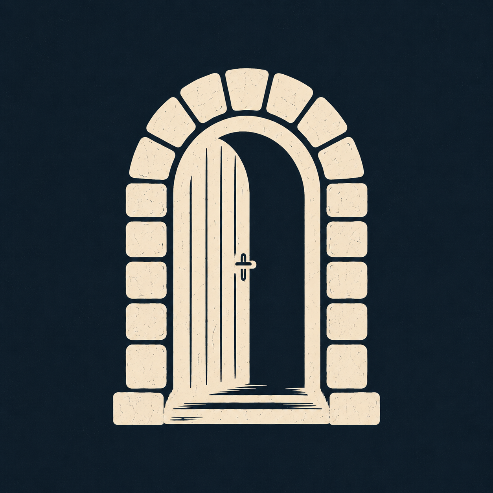

The Upper Room.
A brotherhood of men learning what it means to walk with God in a world that keeps telling us otherwise.
Why the upper room.
In Acts 2, a handful of ordinary men gathered in an upper room. It was there the Holy Spirit showed up and changed them. Ordinary men walked out different.
That is the posture we meet with. A borrowed room on the second floor of an office building in Cookeville. Men who come in carrying the week and leave carrying something else.

Faith-based men. No pressure.
Faith-based men learning what it means to be a man by biblical standards. We gather to walk with God and stand strong in our faith, whatever the world is saying that week.
Our mission is tactical. We take what is in the word and figure out how to actually use it. Monday morning. Tuesday afternoon. At 2 AM when your kid is sick. At 5 PM when the job falls apart.
No performance. No hierarchy. No pressure to believe a certain way, speak up, or be anywhere on your journey other than where you are. If you are curious what a walk with God actually looks like, this is a place to come look.
How we gather.
Not a lecture. Not a traditional Bible study either. A room full of guys, a chapter of scripture, and honest conversation about what the week is putting in front of us.
Walk in. Food and drinks are usually around. Grab some.
Open a chapter. Right now we are working through Proverbs, a chapter at a time.
Small groups. Four or five men to a group. No assigned seating.
Read together. Each man reads a handful of verses. If there are 35 verses and 5 men, you read 7.
Three questions. Three prompts that keep pulling us back to where the word lands on our actual lives.
Listen or speak. Both are welcome. Sit back the whole first night. Nobody puts you on the spot.
The kind of men we build with.
The goal is not attendance. The goal is the kind of brotherhood where the phone rings at 3 AM and a man answers. Where somebody is in the room when things go sideways and cheering when things go right.
When life breaks
Men who pick up the phone in the middle of the night. Who drive across town when you need somebody to just be in the room.
When life is good
Men who celebrate the promotion, the baby, the anniversary, the sobriety milestone. Real friends for the wins.
Through the everyday
Men walking the same road. Marriage, kids, money, work, faith. Guys who want to see you win.
At the table every week
Showing up Thursday after Thursday is how the trust gets built. The room knows you. You know the room.
The Y Project.
A charitable, faith-based organization filling holes in our local community and the region. Volunteering for events. Showing up where help is needed. Serving quietly. When they need hands, we are those hands.
We will see you Thursday.
No sign up. No introduction required. Bring yourself, and bring a friend if you want. The door is open.